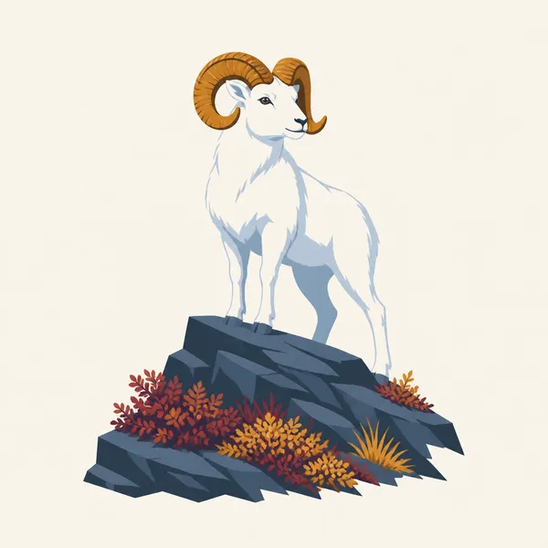
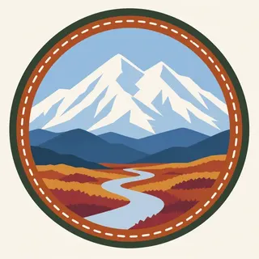

01
The one road
The understanding page calls it the Denali Park Road, 92 miles, east to west, the only road and the only entrance. The header follows it toward the mountain. Buses and the paved limit are operating facts. Check them on NPS.
TrailMark Archive Edition
Alaska | Alaska Range
Mount McKinley National Park on February 26, 1917. Denali National Park and Preserve on December 2, 1980.
Archive No. TM-DENA-035
National Park since 1917
Collection One road
Park Overview
President Woodrow Wilson signed Mount McKinley National Park into law on February 26, 1917. ANILCA, on December 2, 1980, enlarged it and renamed it Denali National Park and Preserve.
The enabling page says Congress established the 1917 park as a game refuge. The basic-information page says the main reason was Dall sheep. Charles Sheldon and Harry Karstens had wintered near the Toklat; Sheldon pushed the idea of a park to conserve wildlife, and Karstens became the first superintendent in 1921.
The homepage and the management page put the park and preserve at about 6 million acres, with one road. A 2017 fact sheet totals 6,075,029 acres. The shared figure is about 6 million acres. The south peak of Mount McKinley is listed at 20,310 feet on that sheet and on the homepage.
Emotional Thesis
The header puts the white massif over a braided river, autumn tundra, a single road, and one dark animal. That road is 92 miles, the basic-information page says, dirt and gravel after the first 15 paved miles. Private cars stop at Savage River. The rest is a bus, in season.
The mountain-name page, updated March 26, 2025, says the official name of the peak is again Mount McKinley. A 2025 executive order restored that name. The park remains Denali National Park and Preserve. The mountain is also widely known as Denali, from the Koyukon Athabascan deenaalee, a word for the tall one.
Landscape Highlights
01
The understanding page calls it the Denali Park Road, 92 miles, east to west, the only road and the only entrance. The header follows it toward the mountain. Buses and the paved limit are operating facts. Check them on NPS.
02
The fact sheet lists the south peak at 20,310 feet and the north peak at 19,470. The lowest point on that sheet is the Yentna River at the boundary, 223 feet. The official name is Mount McKinley. Denali is the Koyukon name still in wide use, and it is the name of the park.
03
The same sheet places Wonder Lake Campground at 2,055 feet. The river in the painting is the braid you see before the peak. It is not a claim that every view includes the summit. Cloud is the usual editor.
Wildlife
The basic-information page says most visitors hope to see the mountain and wildlife such as bears, moose, caribou, sheep, and wolves. The 1917 purpose was the sheep.

01
The extra drawing is one Dall sheep on a rock. It is the archive's animal for the original law, not a census.
02
The dark animal in the header tundra is a painting. It is not identified to species here.
03
Seeing any of them depends on the season and the road. The page says the main visitor season runs from about May 20 into the second or third week of September, and that buses do not run in fall, winter, or spring.
Geology
The park brochure calls the mountain an icy granite massif. The fact sheet gives the elevations. A dinosaur and glacier chapter lives on the geology page and is not renumbered here.
01
South peak 20,310 feet, north peak 19,470, Mount Foraker 17,400, on the 2017 fact sheet.
02
From the Yentna at 223 feet to the south peak is the vertical fact. The road never climbs the mountain. It looks at it.
03
Earthquakes, landslides, and glaciers are named on the understanding page as the geologic story. This essay does not add a quake magnitude.
May 20 through mid or late September is the basic-information page's main season. The mountain is often in cloud. The tundra in the header is the autumn end of that window.
The same page says the one road is closed for most of the winter and the park stays open for winter recreation. A gravel road in the painting is not a January promise.
Buses do not operate in fall, winter, or spring. If you go outside the main season, you are not on the tour schedule.
The first ascent was June. Modern climbing rules, permits, and mountain names on the permit are on NPS, not in this paragraph.
Photography
A summit with no tundra is a poster. The park is the distance between the gravel and the snow.
01
Do not wait the whole trip for a clear peak and miss the sheep slopes. The 1917 park is still there when the summit is not.
02
Past Savage River the view is often from a bus. The animal sets the stop, not the photographer.
03
The official name is Mount McKinley. Denali is the Koyukon name the mountain-name page records, and it is still widely used. Either label should say which one it is.
Field Notes
They drew the boundary for the sheep. The peak above the road is officially Mount McKinley, and people still call it Denali.
TrailMark Field Notes

Badge Story
The mark is the high one and the single road. A generic snow cone without the tundra misses the refuge.
South peak, braided river, autumn ground.
A Dall sheep can be the animal. It is the original reason.
Do not reuse the Grand Teton skyline. This summit stands alone.
Archive No.035
LocationAlaska Range
ReleaseHigh One
Stewardship / Safety
The fact sheet separates park acres from preserve acres. Hunting rules differ. The road rules differ by mile. NPS has the day.
Private vehicles end where the park says they end. The 15-mile paved section is the basic-information page's line, not a guess.
Bears, moose, caribou, sheep, and wolves are the page's list. Distance is not optional because a bus stopped.
Winter travel on a closed road is a different park. Read the winter page before you treat the header as a route.
Climbing the mountain is a permit world. The 1913 party is history, not a plan.
Current conditions, fees, and alerts are on the National Park Service site.
Continue the Archive
Denali is the wildlife park with one gravel line. Gates of the Arctic is the Brooks Range without one. Glacier Bay is the tidewater park in the same batch.